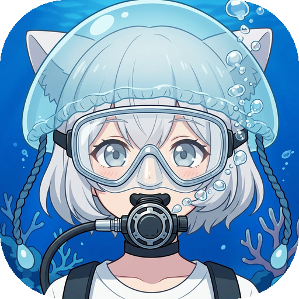
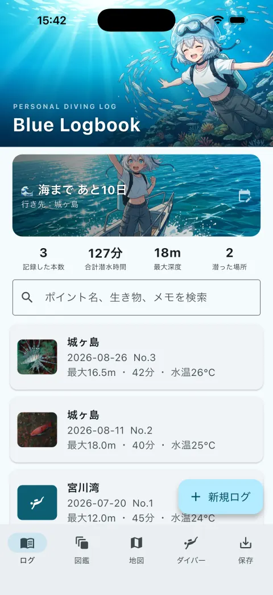
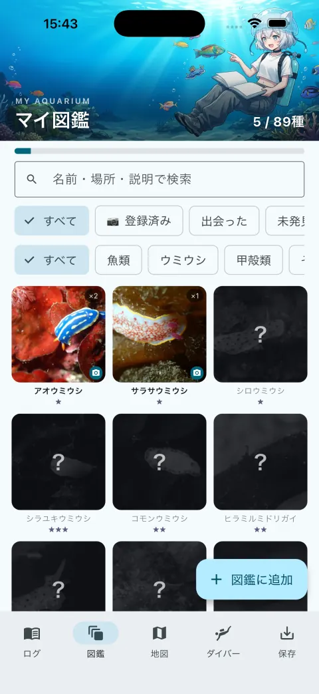
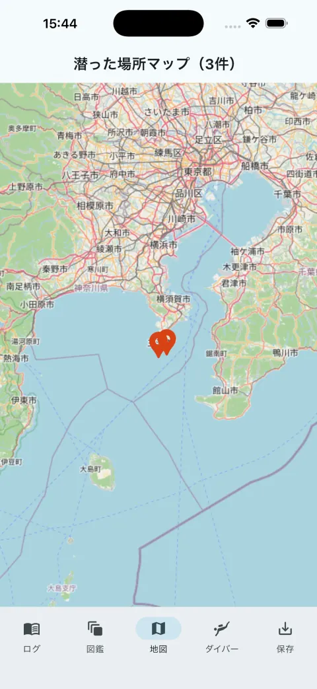
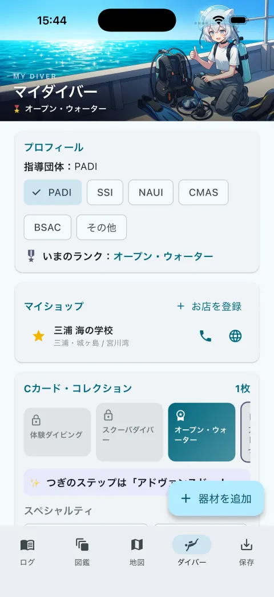
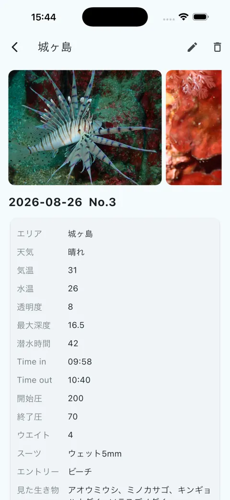

ダイビングのログブックアプリ「Blue Logbook」潜った海を、ぜんぶ手のひらに。
潜った日の記録・写真・出会った生き物・Cカード・器材を、1つのアプリに。アカウント登録はいりません。記録はあなたのスマホの中に残ります。三浦 海の学校がつくりました。
Android の方・アプリを入れずに使いたい方は ブラウザ版 をどうぞ（同じ記録が付けられます）。
アプリの画面
App Store に提出したときのスクリーンショットです。ヘッダーのイラストは、まんがの案内役クララです。





できること
紙のログブックのように気軽に、スマホならではの便利さで。紙はこれからも使えます。そのうえで、手のひらにも1冊。
ログ潜った日を、1本ずつ
日付・ポイント・水深・水温・透明度・タンク圧・見た生き物を記録。写真は何枚でも添付でき、地図をタップしてポイントにピンを立てられます。新規ログは現在地に自動でピンが立ち、「前回のログをコピー」で入力も早く済みます。
マイ図鑑三浦で会える89種
出会った海の生き物をコレクション。ログに名前を書くだけで「出会った」記録がたまり、自分で撮った写真を図鑑に登録できます。89種にいない子は自分で追加できます。
マイダイバーCカードと器材
取ったCカード（認定証）をコレクションとして記録。カードの表裏写真も保存できるので、お店で提示するときに便利です。器材棚に自分の器材を登録して「いつものセット」をワンタップでログに反映。通うお店の欄もあります。
海ごよみ海まで、あと何日
次のダイビングの予定を入れると「海まで あと◯日」、潜ったあとは「海から◯日」をやさしく数えます。深度・水温の単位（m / ft・℃ / ℉）も選べます。
入れ方（3ステップ）
ログインもアカウント作成もないので、入れたらすぐ1本目を書けます。
上の「App Store からダウンロード」ボタンから開くか、App Store で「Blue Logbook」と検索してください。無料です。
（iPhone / iPad で見ている方は、ページ上部の Safari の帯からも開けます）
ログタブの「＋」から日付・ポイント・水深・水温を入れるだけ。写真は「カメラで撮る」か写真ライブラリから。位置情報とカメラの許可は、最初に使うときに1回だけ聞かれます。
記録はスマホの中だけに保存されます（サーバーには送りません）。「保存」タブの書き出しでファイルにしておくと、バックアップにも機種変更にも使えます。
ブラウザ版で「書き出し」→ ファイルに保存 → アプリの「保存」タブで「読み込み」。これだけで、これまでのログと写真がアプリに引っ越します。逆方向（アプリ → ブラウザ版）も同じ手順で戻せます。ブラウザ版はこのあとも使えます。
よくある質問
データはどこに保存されますか？
すべてお使いの端末（iPhone / iPad）の中に保存されます。アカウント登録はなく、サーバーへの自動送信もありません。通信するのは地図タイル（OpenStreetMap）の取得だけです。詳しくはプライバシーポリシーをご覧ください。
機種変更のときはどうすればいいですか？
「保存」タブの書き出しでファイルを保存し、新しい端末のアプリで読み込んでください。端末の中だけに保存する設計なので、書き出しておかないと引き継げません。ときどき書き出しておくのをおすすめします。
Android では使えますか？
いまは iPhone / iPad 向けです。Android の方は、同じ記録が付けられるブラウザ版をお使いください。
三浦 海の学校のお客さんでなくても使えますか？
使えます。通うお店の欄も指導団体も自分で選べます。1本目の方から、ずっと潜ってきた方まで、どなたでもどうぞ。
紙のログブックはもう要りませんか？
紙のログブックはこれからも使います。スタンプやサインが入る良さは紙にしかありません。そのうえで、写真と検索に強いアプリを手のひらにも置いておく、という使い方をおすすめしています。
くわしくは、こちらも
つくった人：三浦 海の学校 代表 吉田 哲司（PADIコースディレクター）。開発・運営は AquaBit LAB。アプリのアイコンとヘッダーのイラストはAIで生成しています。